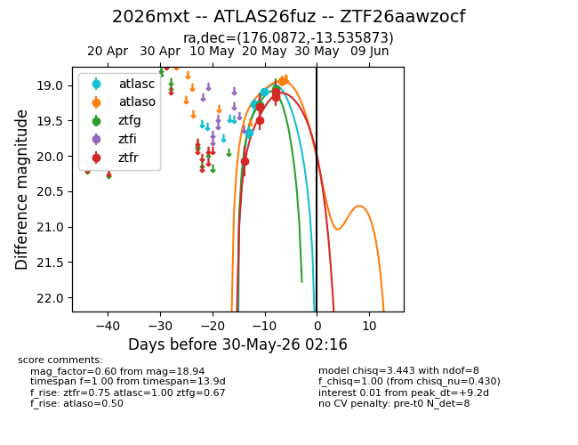
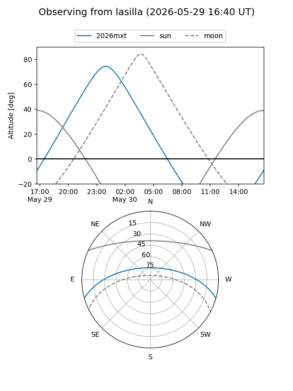
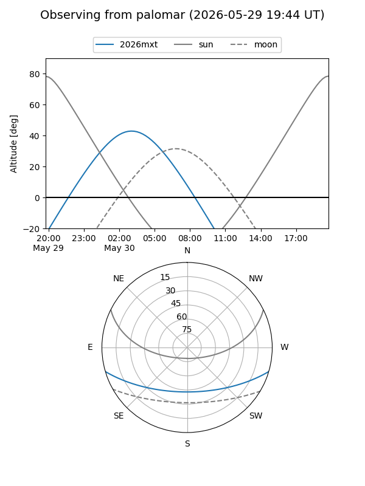
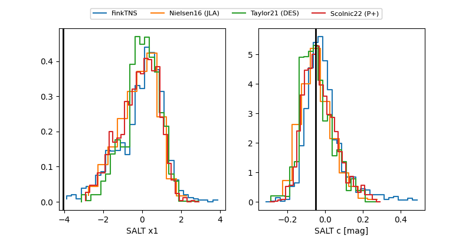

2026mxt
Target 2026mxt at 2026-05-30 02:17
Aliases and brokers:
lsst-FINK: link
lsst-Lasair: link
lsst-ALeRCE: link
ztf-FINK: link
ztf-Lasair: link
ztf-ALeRCE: link
TNS: link
YSE: link
alt names
ZTF26aawzocf (ztf,fink_ztf)
2026mxt (tns,yse)
ATLAS26fuz (atlas)
Coordinates:
equatorial (ra, dec) = 176.0872,-13.53587
equatorial (HMS+DMS) = 11:44:20.92,-13:32:09.14
galactic (l, b) = (279.0205,+46.19776)
Flags:
Photometry:
last atlasc=19.09, atlaso=18.94, ztfg=19.06, ztfr=19.10
3 atlasc, 1 atlaso, 4 ztfg, 5 ztfr detections
Lightcurve

Visibility


Additional plots
